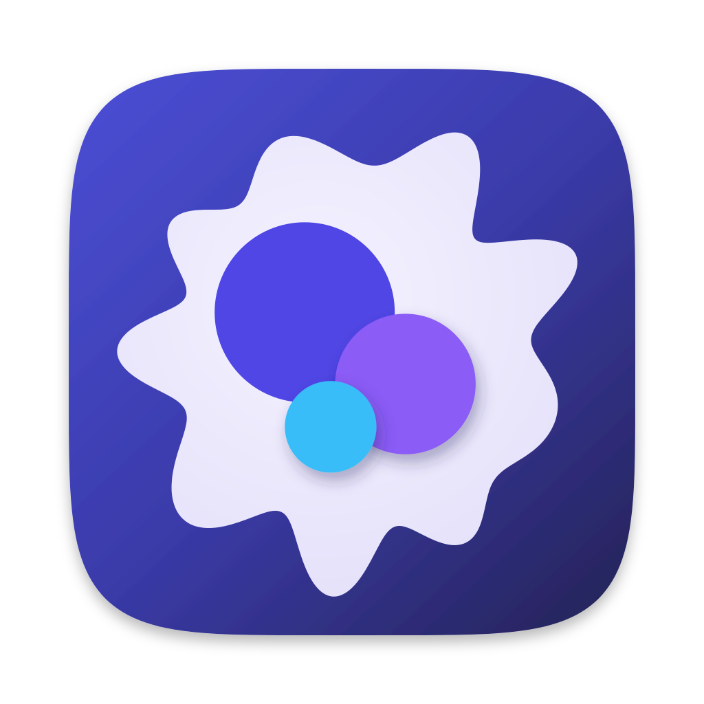

斜向靛蓝渐变铺满整个底板。在 AppIcon.icon 中它是 linear-gradient 填充；扁平渲染把它画在圆角方形内。
App 图标规范
macOS App、Windows 安装包、WebUI 标签页、PWA 和文档站共用同一个标志：靛蓝底板里一个薰衣草色细胞，细胞中有三个扁平圆片。macOS App 打包扁平的 icon.icns；AppIcon.icon 以 Icon Composer 图层保存同一图形，供 Liquid Glass 工具链使用。
标志构成
细胞是薰衣草色窗口，外轮廓是平滑的放射状波形。三个扁平圆片在其中叠放，由后到前依次为靛、紫、天蓝。

前面两个圆片向后方圆片投下柔和阴影，不用球体光照也能表达前后层次。
几何与配色
所有尺寸均为底板边长的比例，从底板中心量起。细胞轮廓是闭合曲线 r(θ) = R · (1 + Σ aₖ cos(kθ + φₖ))，整体旋转 −15°，R = 0.364，包含四个谐波：k = 9（a = 0.12，φ = 1.3）、k = 7（0.05，0.2）、k = 12（0.035，2.4）、k = 2（0.02，1.8）。主导的 9 次谐波形成约九条大小不一的圆润放射，其余谐波让放射不规则。每个凸起和凹陷都是平滑圆弧，轮廓没有尖点。轮廓最远到 0.446，在底板内留出清晰边距。
| 元素 | 位置 (dx, dy) | 半径 | 颜色 |
|---|---|---|---|
| 靛色圆片（最后） | −0.084, −0.070 | 0.159 | #4F46E5 |
| 紫色圆片 | +0.094, +0.057 | 0.124 | #8B5CF6，柔和阴影 |
| 天蓝圆片（最前） | −0.038, +0.132 | 0.081 | #38BDF8，柔和阴影 |
| 细胞 | 居中 | 0.364 ± 波形 | 径向 #F4F2FF → #E6E2FA |
| 底板 | 整个底板 | 线性 #4B4FD6 → #3A3AA8 → #23214F | |
#4F46E5 靛#8B5CF6 紫#38BDF8 天蓝资源边界
保留三种颜色的扁平圆片；细胞的平滑波形轮廓；靛蓝底板渐变；区分前后圆片的阴影。
避免圆片上的球体光照或径向高光、玻璃半透明、细胞外的描边圆环、细胞轮廓上的尖点，以及标志内的文字或位图。
Icon Composer 图层透明 1024 × 1024 画布，每层一个元素，SVG 中不画圆角方形、外框、滤镜或阴影。阴影由分组设置提供。
扁平渲染ICNS、favicon 和 PWA 图标由下列扁平 SVG 源渲染，不从打包后 App 的截图导出。
输出目标
| 目标 | 源 | 输出 |
|---|---|---|
| macOS App | docs/images/openprogram-app-icon.svg——Big Sur 网格：1024 画布上偏移 100 的 824 px 圆角方形，带柔和底板阴影 | apps/desktop/build/icon.icns（16–1024 px），即 apps/desktop/package.json 的打包输入 |
| Liquid Glass 工具链 | apps/desktop/build/AppIcon.icon | Icon Composer 分组由前到后：天蓝圆片、紫色圆片、靛色圆片、细胞。所有分组关闭 Specular 与 translucency，所有图层关闭 glass，阴影为 neutral（前两个圆片 0.5，其余 0.3）。ictool 可导出 Default、Dark、ClearLight 和 TintedDark。 |
| WebUI 标签页、文档站 | docs/images/openprogram-tab-icon.source.svg——铺满画布的 64 px 圆角底板 | 原样复制到 apps/web/app/icon.svg 和 scripts/docs_site/assets/mark.svg |
| Favicon、Windows 安装包 | 64 px 标签页图标 | apps/web/app/favicon.ico，含 16、32、48、64、128、256 px 的 PNG 条目 |
| PWA | 64 px 标签页图标；maskable 图标使用铺满的变体 | apps/web/public/icons/icon-192.png、icon-512.png，以及细胞位于 80% 安全圆内的 icon-512-maskable.png |
检查
apps/desktop/scripts/check-icon.sh由 npm run icon:check 运行。要求四个图层、恰好三个已批准颜色的扁平圆片、细胞填充、线性渐变底板填充，以及关闭 Specular、translucency 和 glass 的由前到后分组顺序；拒绝图层 SVG 中的圆角方形、外框、滤镜、阴影、文字和位图。openprogram/self_update/control/supervisor.py受信任的图标探针用 sips 渲染四个图层 SVG，要求 1024 × 1024 透明画布。设计遵循 Apple App 图标 HIG 与 Icon Composer；打包遵循 Electron Builder 图标文档。
实现状态
| 范围 | 状态 |
|---|---|
macOS ICNS、AppIcon.icon 图层、favicon、标签页图标、文档站标志与 PWA 图标 | 已实现 |
README 组合标志（docs/images/logo-lockup*）、社交卡片、侧栏字标（docs/images/logo.svg）和文档 logo.png | 未实现：仍是旧的圆环标志 |